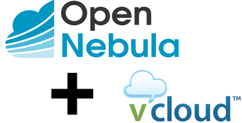

Welcome to addon vCloud Driver documentation!¶
Introduction¶
This addon gives Opennebula the posibility to manage resources in VMware vCloud Director infraestructures. It includes virtualization and monitoring drivers.
{kind=link}
Features¶
This addon has the following capabilities:
- Deploy, stop, shutdown, reboot, save, suspend, resume and delete VM’s in the Virtual Data Centers hosted in vCloud.
- Create, delete and revert snapshots of VM’s.
- Change RAM and CPU values of VM.
- It’s able to hot-attach and detach NICs to VM’s.
- Attach disks to VM, only in cold. To avoid accidental disk remove, the detach disk option is disabled in OpenNebula. If you want enable this option, see Guide section.
- Resize disks during the instantiation. Only increase the size, not decrease.
- Automatized customization of the VMs instanciated.
- It’s able to choose wich storage profile will be storaged the VM’s disk or disks.
- Port filtering via vShield during the VM instanciation.
- Obtain monitoring information from the VDC, Datastore and VM’s.
- In this development version we manage vApps with one VMs inside (A VM in OpenNebula equals a vApp with one VM in vCloud).
- Each Virtual Data Center (VDC) in vCloud is managed as a Host in OpenNebula.
- Import networks, hosts, templates and datastores hosted in vCloud using onevcloud script.
Development¶
To contribute bug patches or new features, you can use the github Pull Request model. It is assumed that code and documentation are contributed under the Apache License 2.0.
More info¶
- How to Contribute
- Support: OpenNebula user forum
- Development: OpenNebula developers forum
- Issues Tracking: Github issues
Authors¶
- Cloud Systems Developer: Arnau Colominas (arnau.colominas@csuc.cat)
- Cloud Systems Engineer: Miguel Ángel Flores (miguel.angel.flores@csuc.cat)
- Cloud Systems Engineer: Xavier Peralta (xavier.peralta@csuc.cat)